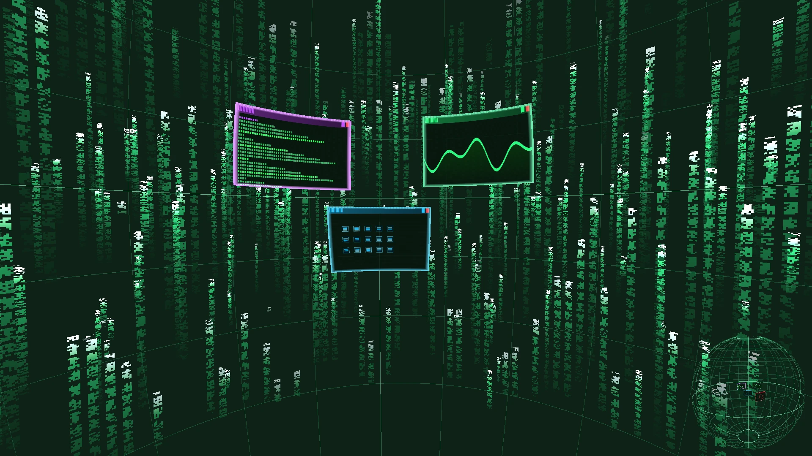

Browser demos
Spheradian Files: Cube Explorer
Your folders as a city, where height is size and density is file weight. Dive into a flat file view with a 3D sector map that draws your route between folders and any pending copy or cut action.
The desktop itself is a native application and does not run in the browser yet. Demos here are interactive simulations of components and ideas.
What exists today
Spherical workspace
360° navigation and free flight inside a geodesic sphere, with curved windows placed at their own position and depth.
Mini-Globe overview
An outside view of the sphere showing every window at its true depth. Click anywhere on it to fly there.
Trust domains
Four domains with borders drawn by the compositor, which window content cannot alter, plus a compositor-owned clipboard vault and a lockdown mode.
Hardened by default
unsafe forbidden, overflow checks in release builds, a pinned shader digest, and a small, auditable codebase.
Run it
git clone https://github.com/spheradian/spheradian.git cd spheradian cargo run --release --locked
Early prototype: it runs as a regular window on your existing desktop and is not yet a security boundary. See the README for requirements, controls, and the roadmap.